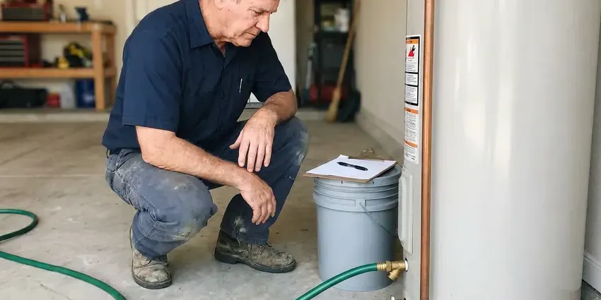
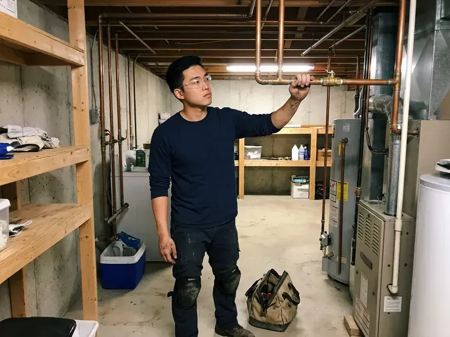
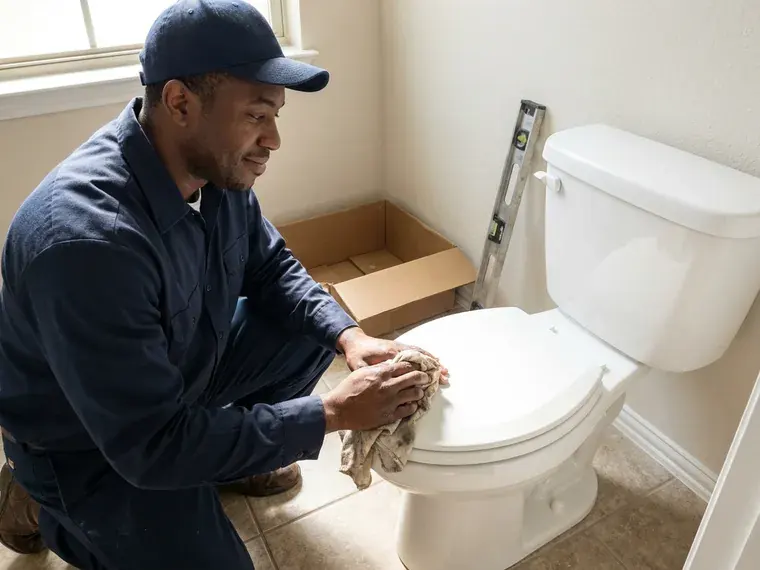

Drains Camera Inspection in Arlington, VA
We push a waterproof camera through your line in Arlington, VA, locate any defect from above and give you a copy of the recording.
- Upfront Pricing
- Same Day Camera Visits
- Location and Depth Readings
- Pre-Purchase Scopes

Know Where to Dig Before You Dig in Arlington, VA
We hand you the footage and tell you plainly what it shows.
Sewer Camera Inspections With Locating in Arlington, VA
FBN Plumbing runs camera inspections for repeat clogs, home purchases, remodels and insurance claims in Arlington. Each one gets a recording. Our written findings list roots, cracks, offsets, bellies and corrosion with their distance and depth, which gives any contractor what they need to quote the work.
Our expertise includes:
- HD self-leveling camera inspection of small and large lines
- Belly and low spot detection on main lines
- Under-slab drain inspection ahead of renovations

Additional Plumbing Maintenance Services in Arlington, VA
Our maintenance and specialty plumbing services in Arlington, VA protect your home year-round and extend the life of every system.


Professional water heater maintenance, Arlington



Customers
Why Choose FBN Plumbing for Drains Camera Inspection in Arlington, VA?
We report what the camera shows, whether or not it leads to a repair. That is the whole point. Plenty of scopes come back with minor scale or a few small roots, so the honest answer is often just a cleaning.
- Clear Before Scope, Blocked lines get cleared first so the camera can travel the full run.
- No Digging, The camera enters through a cleanout, toilet or vent.
- You Keep the Video, Every inspection comes with a copy of the recording.
Citywide Coverage
Our techs cover Arlington, VA and the communities around it. Every call gets the same gear. From the middle of town to the outer edges, we can usually be there quickly, with backups first.
Experienced Team
Every truck carries both a small and a large camera head. The line decides the camera. Branch drains get the small head so it can turn tight corners, and mains get the big head with more light.
Safety-First Approach
When we pull a toilet to reach the line, we reset it with a fresh wax ring. Old rings get tossed. We check the bolts and the supply line, and test it before we leave.
Trusted Certified Arlington Plumbing Services Professionals
At FBN Plumbing, we are proud to offer certified plumbing services throughout Arlington, VA. Those papers on the wall mean something. Every repair, install and maintenance visit follows strict safety and quality rules, and the plumbers doing the work carry recognized industry credentials.
Call Us Now PHCC Plumbing Contractor Recognition
PHCC Plumbing Contractor Recognition Better Business Bureau (BBB) Accreditation
Better Business Bureau (BBB) Accreditation Angi Certified Pro
Angi Certified Pro ISO 9001 Quality Management Certification
ISO 9001 Quality Management CertificationCamera Inspections We Perform in Arlington, VA
Drainage System Pre-Purchase Inspections in Arlington, VA
Sewer repairs can cost thousands, and they rarely show up in a home inspection report. Buyers get surprised. A scope before closing in Arlington, VA shows you the condition of the lateral and gives you footage you can hand to the seller when asking for a repair or a price adjustment. Older homes need it most.

Camera Inspection Cost vs. Exploratory Digging in Arlington, VA
A camera inspection usually costs a few hundred dollars. Exploratory holes cost far more. Without a camera, a crew may open two or three holes trying to find a break that the camera and locator would have pinned to one spot within a foot. With footage and a mark on the ground, the excavation stays small. Less lawn gets torn up.
Pre-Purchase Sewer Scope in Arlington, VA
Home inspections usually leave out the sewer line. That is a big gap. A pre-purchase scope shows the condition of the lateral before you close, and homes with clay or Orangeburg fiber pipe benefit the most since those materials crack, sag and let roots in as they age. Sellers take footage seriously.
Identifying Specific Pipe Damage in Arlington
Each kind of damage looks different on camera. Cracks show as dark lines. Offsets show as a lip where one pipe section has dropped below the next, bellies show up as standing water that the camera head dips into, and corrosion on cast iron looks like rough, flaking scale along the bottom of the pipe. Knowing which one you have sets the repair.
Hydro-Jetting Pre-Inspection in Arlington, VA
Jetting a cracked or collapsing pipe can make it worse. The camera goes in before the jetter. A quick scope in Arlington, VA tells us if the line can handle jetting or needs a lighter touch. It takes about 20 minutes.
Post-Repair and Post-Jetting Verification in Arlington
Once roots are cut, a line is jetted or a section is repaired, a follow-up camera pass shows the result. The before and after speak for themselves. The footage confirms that roots are gone, grease is off the walls and any new section is aligned and sealed, which gives you a record for future reference or a warranty claim. Some leases call for it.
Sewer Line Camera Inspection in Arlington, VA
The main sewer lateral carries everything from your house to the city sewer. It is out of sight for decades. Our camera travels the full length, showing roots, cracks, offsets and sags with their distance from the cleanout. The locator then marks each one on the ground.

Post-Repair Inspection in Arlington
A new section of pipe should be straight, sealed and sloped correctly. The camera proves it. After a repair in Arlington, we run the camera through the new section and the joints on either side to confirm nothing shifted when the trench was backfilled. The video goes in your files.
Local Sewer Camera Service in Arlington, VA
Home buyers in Arlington often have only a few days to get inspections done. We understand the deadline. We try to fit sewer scopes in quickly, and the footage and written findings usually reach you the same day so you can bring them to your agent before the window closes.
Searching "drains camera inspection near me" in Arlington, VA usually means something keeps going wrong with a drain. FBN Plumbing has camera techs working locally, so most inspections can be booked within a day or two of your call. Active backups get priority.
FBN Plumbing at a Glance
- Licensed and insured plumbers serving Arlington, VA
- 24/7 emergency service with same-day scheduling
- Clear written estimates, no hidden fees
- 4.9-star rated by 798+ Virginia customers
Arlington Map
Arlington Information
- Population
- 238,643
- Area codes
- Local
- Service area
- Arlington and towns within a 40 mile drive
- Nearby
- Alexandria, McLean, Reston, Centreville
Expansive clays in some areas swell when wet and shrink when dry, which can crack foundations and shift buried sewer lines. A camera inspection in Arlington spots offset joints and sags early, before a slow drain turns into a backup or a leak under the slab.
Talk to a Plumber
Call FBN Plumbing for reliable plumbing work done by licensed pros in Arlington, VA.
Our Specialized Plumbing Services in Arlington, VA
At FBN Plumbing, we handle the full list of plumbing services across Arlington, VA. We go from leak detection all the way to full system installations, for homes and commercial buildings, and we do it quickly at a fair price. Here are the core services we offer:


From Cleanout to Recorded Video in Arlington, VA
Here is how FBN Plumbing runs a drain camera inspection in Arlington, VA, step by step.
Book a Time
Call (434) 230-6997 and pick a time that works at your Arlington property.
Set Up
The tech protects the area and opens the access point. Blocked lines get cleared first.
Inspect the Line
We guide the camera through the pipe, stopping on every finding. The footage is recorded.
Frequently Asked Questions About Drains Camera Inspection in Arlington
Most camera inspections in Arlington, VA run $200 to $500. Line length matters. A short branch line through an easy cleanout sits at the low end, while a long main with no cleanout, a pulled toilet or a full written report for a buyer lands toward the top. You get a quote before we start.
Roots, cracks and offset joints. Bellies and corrosion too. The camera also shows grease buildup, collapsed sections, foreign objects and bad connections. Each finding points to cleaning or repair.
Clogs that keep coming back. That is the main one. Slow drains in several fixtures, sewage smells, gurgling toilets and a backup that happens after heavy use are other good reasons to look inside the line. Older Arlington homes with big trees are worth scoping even without symptoms.
Yes, especially for older homes. Clay and cast iron are the worry. Expansive clays in some areas swell when wet and shrink when dry, which can crack foundations and shift buried sewer lines. A scope costs a few hundred dollars, and the repair it might reveal costs far more.
Not really. It is a clean job. We usually go in through an outdoor cleanout or one in the garage, and if we have to pull a toilet we lay down drop cloths and reset it with a new wax ring when we finish in your Arlington home. No digging is involved.
The inspection itself is diagnostic. It does not carry a separate warranty. We stand behind the accuracy of our footage and locating marks, and any repair FBN Plumbing does afterward comes with its own warranty. The terms are on your invoice.
No, it needs open pipe. A full clog stops it. When the line is blocked, we clear it first with a cable or jetter and then run the camera, which also lets us see what caused the clog in the first place. Both can happen on one visit.
Repeat clogs are the top sign. Smells matter too. Slow drains in several fixtures, gurgling toilets and sewage backups all suggest a deeper problem in the line that a camera can find and locate. In Arlington, older homes with clay pipe see these most.
Hear From Customers Who Hired Our Plumbing Experts

Rachel N.
Hard water was leaving white crust on every faucet and our dishwasher was struggling. The tech tested the water, recommended a softener sized for a family of five, and installed it with a bypass valve in one afternoon. The spots on our glasses are gone.
Water Softener · Dale City, VAJessica T.
We were adding a gas range in a kitchen remodel and needed a new line run from the meter. The plumber pulled the permit, ran the pipe through the crawl space, and had it inspected and approved within the week.
Gas Line Repair · Alexandria, VA
Carlos V.
Our house still had galvanized pipe, and upstairs the shower was a trickle. The crew repiped everything in PEX over three days and patched every drywall hole before they left. The pressure difference is night and day.
Repiping · Reston, VA
Karen W.
After our third pinhole leak in copper, we stopped patching. FBN Plumbing gave us a written plan room by room and repiped the house in PEX while we stayed in it. The crew covered our floors every morning and cleaned up every night.
Repiping · Centreville, VASofia M.
Two new toilets went in during one visit. The tech set them on new wax rings and swapped the old supply lines. He also noticed our bathroom faucet dripping and replaced the cartridge while he was there. No mess left behind.
Toilet Installation · Centreville, VAAngela D.
Our sump pump quit during a storm and the water was an inch from the basement carpet. FBN Plumbing put in a new pump with a battery backup that same evening. We have had two heavy rains since. It kicked on both times.
Sump Pump · McLean, VA